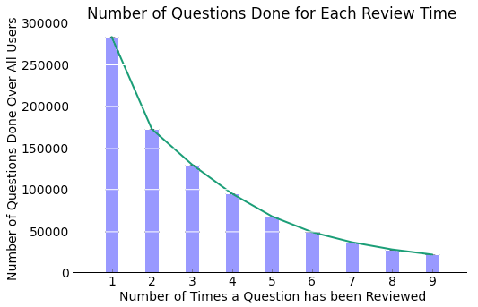

Exploratory Analysis
At first the above graph was very confusing. It didn't make sense that user average scores showed little improvement and even deterioration with the number of reviews done. However, as displayed adjacently, each review number has a different number of questions done. In the above we made lists that include review scores for all questions. However, as we will show below and as the x tick labels above indicate, there are more questions done with fewer reviews than questions done with more reviews.
Instead of looking at all of questions done that have a given number of reviews, we will look only at questions done that users have reviewed an exact number of times. For example, in the adjacent graph, questions were included in the 1 column if a user reviewed a question once or more. Now we will make a graph where number of questions done in the 1 column are only questions that a user has seen exactly once.
Intuitively it is now makes more sense when looking at improvement to look at questions that have all been reviewed the same number of times. We want to include only the same questions and the same users. Below we filter for recall_score count to equal 5 we can see marked improvement between each review with smaller variance. Also, we notice that the average for the first review was less than before.
Here we can see an upward trend with review number. Interestingly, the average score is initially lower when filtering for questions that have been reviewed exactly 5 times and the variances within reviews is smaller.
The ratings by review number are correlated as indicated by the very small p-values. The correlation between review number and review score seems to have a moderate uphill relationship as indicated by the increasing pearson correlations. It is important to consider that this includes reviews for all the users in the data set who have answered a question exactly 5 times. It also does not incorporate differences in time between reviews. We will repeat the above for questions that have been reviewed exactly 9 times below.
It's interesting that questions that have been reviewed more have a lower initial review score. This makes sense though because you should be reviewing a question more if you don't know it well initially. The improvement between reviews looks linear. It's also interesting that the final review for a question, whether you reviewed it 5 times or 9 times has an average score around 4.
The improvement with number of reviews is interesting but also to be expected. If such improvement were not occurring then there might be a problem with Firecracker or its users.
Firecracker's flash cards are categorized as either 'recall' or 'choice'. A potential problem with using a recall based flash card system is that users may be biased in the way that they self report their recall scores. Studies have shown that self reported data using rating scales tends to be closer to the middle perhaps to make people look less extreme. We can only guess about the underlying reasons for biases in self reported recall scores but it may be interesting to compare average recall scores for recall and choice questions. While users still rate choice questions on a scale from 1 to 5, choice questions give an objective answer as to whether the user was correct or incorrect.
Now we have a good idea of how average user scores change with the number of questions done. Our data includes many categorical variables. The categorical variables for questions are topic, sub_subject, subject, and category. The categorical variable for users is institution_id. Before we begin slicing the data in too many ways we'd like to get a sense of average scores for questions, topics, sub_subjects, and subjects. Because users answer questions multiple times we will start out by only using the first time a user has answered a question.
The highest question averages are around twice as high as the lowest question averages. This indicates that some questions are significantly harder than others. So we need to be careful when comparing users who have answered different questions.
Initial score variance across subjects is less than initial score variance across questions. For our models we will incorporate question difficulty but will not incorporate variances in difficulty using broader categorizations of questions.
Ebbinghaus Forgetting Curve
Before we move on to developing predictive models, we wanted to plot user recalls for a given question over time for a few of our users because our predictive models are based on the Ebbinghaus forgetting curve.